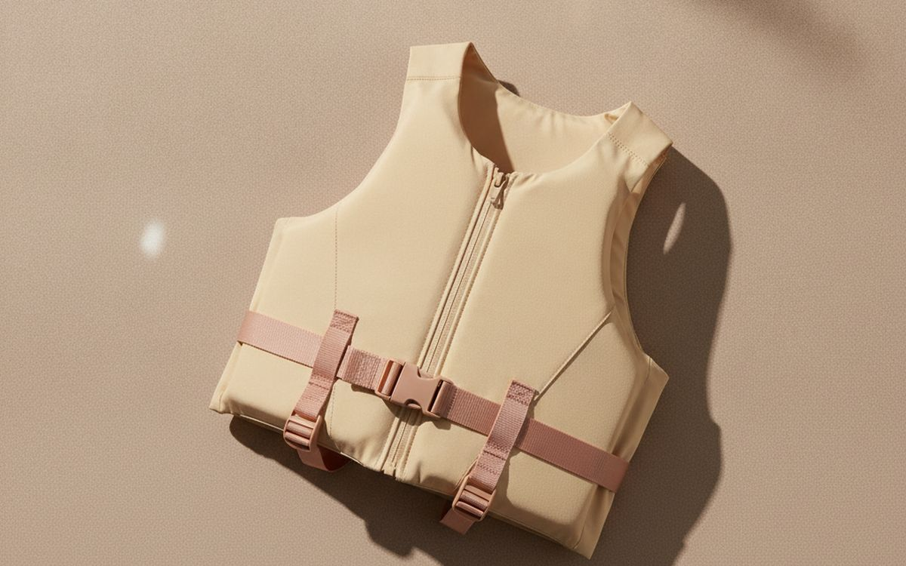
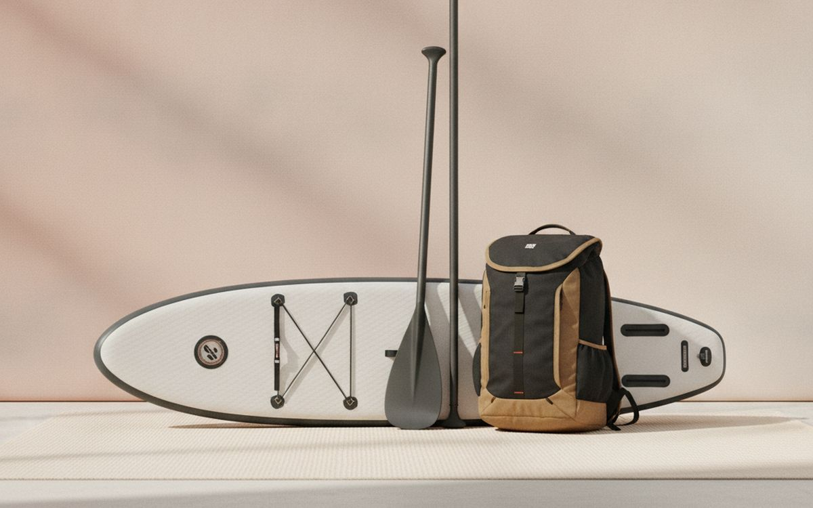
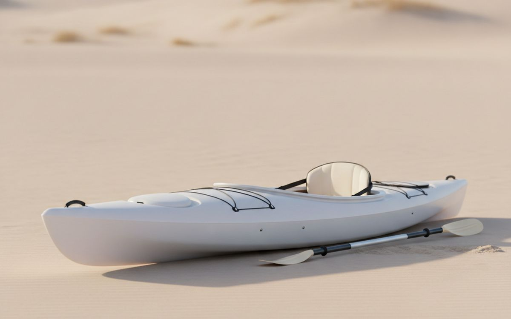
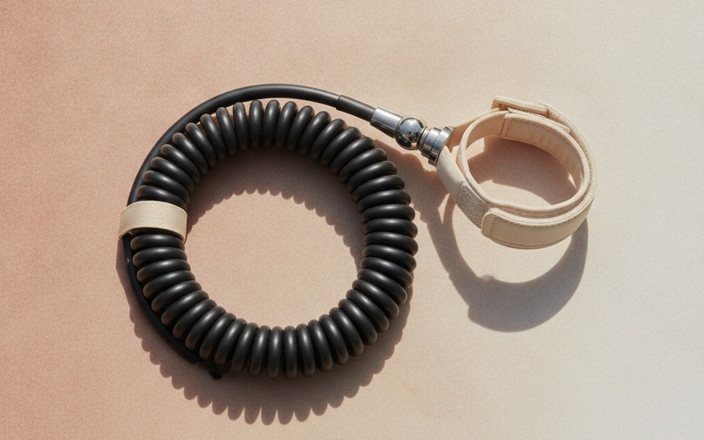
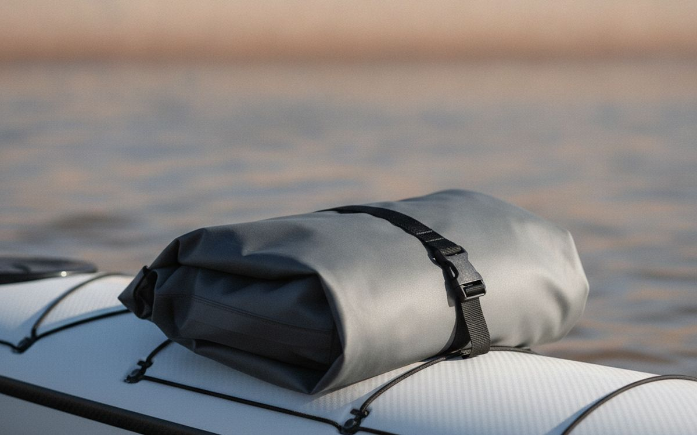
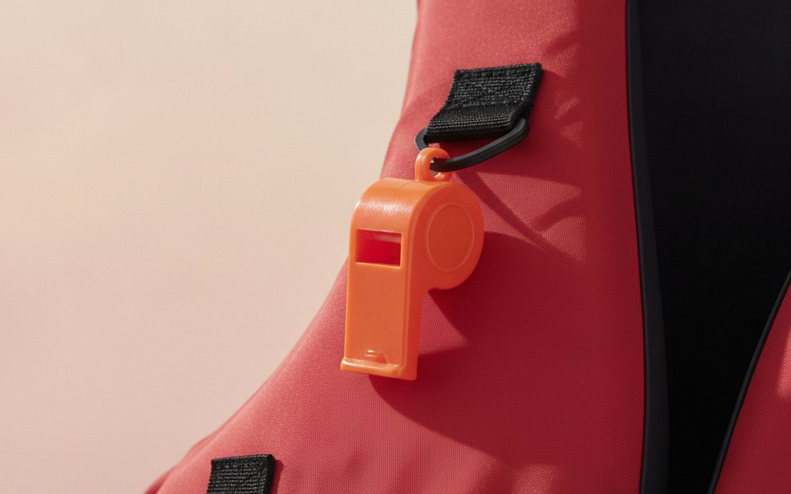
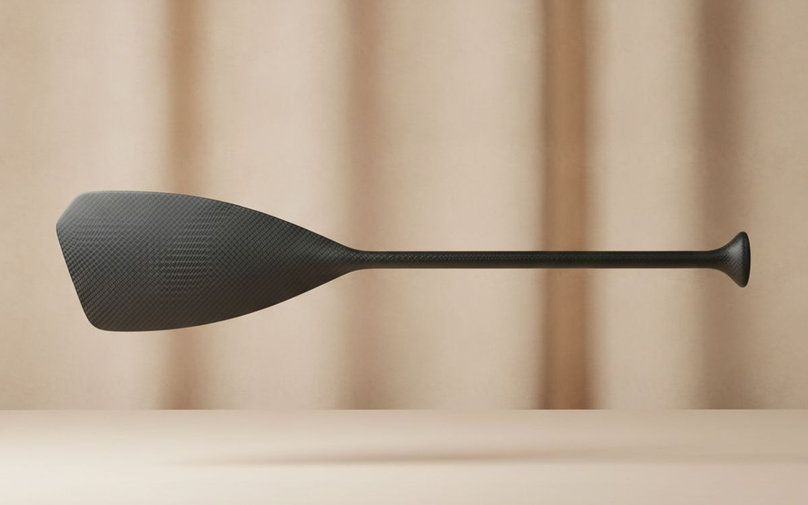
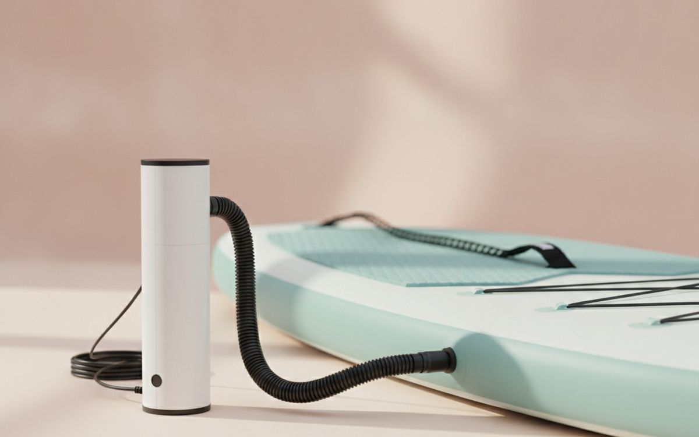
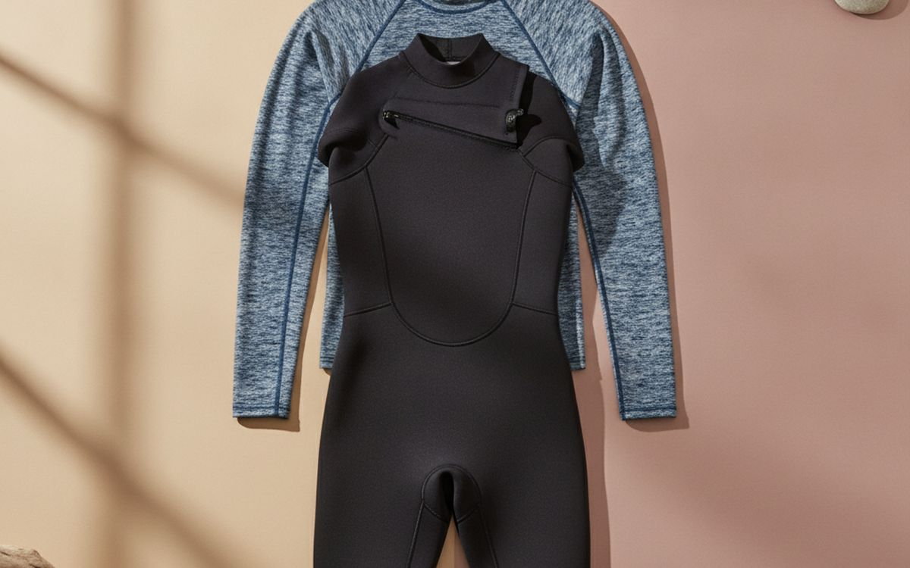
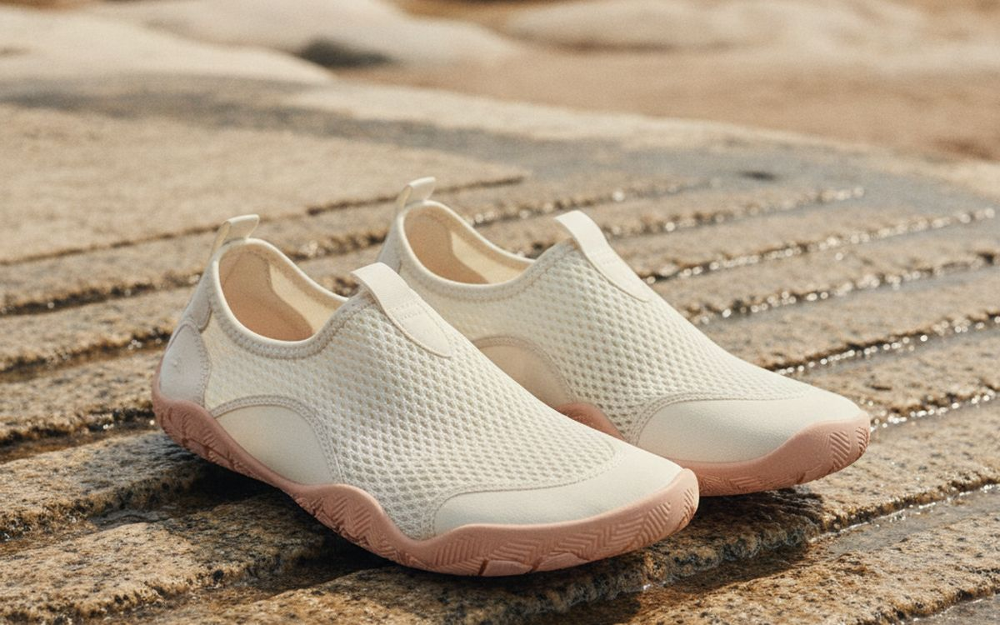

Paddling is one of the easiest outdoor sports to start, especially since inflatable boards and kayaks made it possible without a roof rack or garage. It is also one where the mistakes can be serious: cold water, wind that pushes you offshore, and no life jacket. Most accidents happen on calm, sunny days to people who did not expect trouble.
This list is ordered by what matters most: safety first, then the board or boat, then the gear that makes it comfortable. Buy for calm, flat water to start, and take a lesson if you can.
Prices below are approximate street prices at the time of writing and move around constantly, especially during sale events. Treat them as a rough band for budgeting, not a quote. Always check the live listing before you buy.
The short version
A USCG-approved life jacket (PFD)
The piece you should never skip
Disclosure. The links on this page are affiliate links. If you buy through one we may earn a commission at no extra cost to you. It does not affect what makes this list or the order it is in.
How we picked
These picks come from US Coast Guard and paddling organisation safety guidance, published testing and long-run owner reports, cross-checked against current retail listings. We have not personally tested every item here. Check your state's rules; many require a life jacket and some require a whistle and light on paddleboards.
At a glance
Prices are approximate at the time of writing and change often.
The picks

01 · The piece you should never skipA USCG-approved life jacket (PFD)
Most paddling deaths involve people not wearing a life jacket. A modern paddling PFD is comfortable, has large armholes for paddling and does not ride up. Buy one approved by the US Coast Guard that fits snugly; it should not lift above your chin when you pull up on the shoulders. Inflatable belt packs are an option for adults on paddleboards but need maintenance and are not for children or weak swimmers. The case for it: saves lives, required in many places, and modern designs are comfortable. The trade-off is real: warm on hot days and inflatable types need checking regularly, so weigh that against how often it would actually get used.
$50-120Trade-off: Warm on hot days
Why it is here
- Saves lives
- Required in many places
- Modern designs are comfortable
Worth knowing
- Warm on hot days
- Inflatable types need checking regularly

02 · Easy storage and transportAn inflatable paddleboard package
Inflatable paddleboards pack into a backpack, fit in a car boot and store in a closet. Good ones inflate to 15 psi or more and feel almost as stiff as a hard board. Beginners should choose a wide, stable all-round board around 10-11 feet long and 32 inches wide. Packages usually include a paddle, pump, leash and bag. Avoid very cheap boards; they flex like a pool toy. The case for it: stores and travels easily, stable for beginners, and package includes the basics. The trade-off is real: inflating takes time and effort and cheap boards flex and feel unstable, so weigh that against how often it would actually get used.
$250-600Trade-off: Inflating takes time and effort
Why it is here
- Stores and travels easily
- Stable for beginners
- Package includes the basics
Worth knowing
- Inflating takes time and effort
- Cheap boards flex and feel unstable

03 · Stable, easy paddlingAn inflatable or sit-on-top kayak
Sit-on-top and inflatable kayaks are stable, easy to get back on if you fall off, and do not trap you inside if they tip. They suit lakes, calm rivers and sheltered coast. Tandem versions take a child or partner. Hard sit-on-tops are faster and tougher but need a roof rack. The case for it: very stable, easy to get back on, and good for families. The trade-off is real: slower than touring kayaks and hard kayaks need a roof rack, so weigh that against how often it would actually get used. Priced around $300-700, it is easy to justify even if it only ends up getting occasional rather than daily use.
$300-700Trade-off: Slower than touring kayaks
Why it is here
- Very stable
- Easy to get back on
- Good for families
Worth knowing
- Slower than touring kayaks
- Hard kayaks need a roof rack

04 · Staying with the boardA leash for your paddleboard
If you fall off a paddleboard in wind, the board blows away faster than you can swim. A leash keeps it attached to you, and the board is your best flotation device. Use a coiled leash on flat water. Do not use an ankle leash in moving rivers; use a quick-release waist leash. The case for it: keeps the board with you, cheap, and often included in packages. The trade-off is real: ankle leashes are unsafe in rivers and check the attachment for wear, so weigh that against how often it would actually get used.
$15-30Trade-off: Ankle leashes are unsafe in rivers
Why it is here
- Keeps the board with you
- Cheap
- Often included in packages
Worth knowing
- Ankle leashes are unsafe in rivers
- Check the attachment for wear

05 · Keys, phone and snacksA dry bag
Everything on a kayak or board gets wet. A roll-top dry bag keeps keys, phone, snacks and a spare layer dry and floats if dropped. A 10-20 litre bag clipped to the deck is plenty for a day. Add a waterproof phone pouch if you want photos. The case for it: keeps valuables dry, floats, and cheap. The trade-off is real: not fully waterproof if submerged for long and roll the top at least three times, so weigh that against how often it would actually get used. For $15-30, it is a small, low-risk addition to the list rather than a centrepiece purchase you need to think hard about.
$15-30Trade-off: Not fully waterproof if submerged for long
Why it is here
- Keeps valuables dry
- Floats
- Cheap
Worth knowing
- Not fully waterproof if submerged for long
- Roll the top at least three times

06 · Getting attentionA whistle
A whistle carries much further than a voice across water and is required on paddleboards and kayaks in many states. Clip a pealess whistle to your life jacket. It costs almost nothing and could matter a great deal. The case for it: required in many places, heard much further than shouting, and very cheap. The trade-off is real: none worth mentioning and pealess designs work when wet, so weigh that against how often it would actually get used. Priced around $5-10, it is easy to justify even if it only ends up getting occasional rather than daily use.
$5-10Trade-off: None worth mentioning
Why it is here
- Required in many places
- Heard much further than shouting
- Very cheap
Worth knowing
- None worth mentioning
- Pealess designs work when wet

07 · Less tiring paddlingA lightweight paddle
The paddles in cheap packages are heavy aluminium, and you lift that weight thousands of times per outing. A lighter fibreglass or carbon paddle makes a surprising difference to how long you can paddle. Adjustable length lets family members share it. It is the best upgrade after the board itself. The case for it: less tiring, adjustable for sharing, and floats. The trade-off is real: carbon is expensive and check the paddle type suits board or kayak, so weigh that against how often it would actually get used. At $60-150, it earns its place on this list without asking for a big up-front commitment either way.
$60-150Trade-off: Carbon is expensive
Why it is here
- Less tiring
- Adjustable for sharing
- Floats
Worth knowing
- Carbon is expensive
- Check the paddle type suits board or kayak

08 · Inflating properlyA high-pressure pump with a gauge
Underinflated boards feel wobbly and flex. Getting to 15 psi or more by hand takes effort, and many people stop short. An electric pump that runs from a car socket fills the board while you get ready. Check the gauge is accurate. The case for it: proper pressure every time, saves effort, and frees you to prepare. The trade-off is real: electric pumps are loud and slow and some drain car batteries without the engine on, so weigh that against how often it would actually get used. For $40-120, it is a small, low-risk addition to the list rather than a centrepiece purchase you need to think hard about.
$40-120Trade-off: Electric pumps are loud and slow
Why it is here
- Proper pressure every time
- Saves effort
- Frees you to prepare
Worth knowing
- Electric pumps are loud and slow
- Some drain car batteries without the engine on

09 · Sun and cold waterQuick-dry clothing or a wetsuit
Water reflects sun, so paddlers burn fast. A UPF rash guard and quick-dry shorts protect from sun. In cold water, which can be dangerous even on warm days, a wetsuit keeps you warm if you fall in. Dress for the water temperature, not the air. The case for it: sun protection, warmth in cold water, and dries quickly. The trade-off is real: wetsuits are hot out of the water and cotton stays wet and cold, so weigh that against how often it would actually get used. Priced around $30-120, it is easy to justify even if it only ends up getting occasional rather than daily use.
$30-120Trade-off: Wetsuits are hot out of the water
Why it is here
- Sun protection
- Warmth in cold water
- Dries quickly
Worth knowing
- Wetsuits are hot out of the water
- Cotton stays wet and cold

10 · Launching over rocksWater shoes
Launches are often rocky, muddy or covered in shells. Water shoes protect feet and give grip on a wet board. They drain quickly and stay on in water, unlike flip-flops. The case for it: protects feet at launches, grip on wet boards, and quick drying. The trade-off is real: sand gets inside and sizing varies by seller, so weigh that against how often it would actually get used. At $15-30, it earns its place on this list without asking for a big up-front commitment either way. As with anything on this list, check the exact listing details and current price before adding it to a cart.
$15-30Trade-off: Sand gets inside
Why it is here
- Protects feet at launches
- Grip on wet boards
- Quick drying
Worth knowing
- Sand gets inside
- Sizing varies by seller
Common questions
Kayak or paddleboard for a beginner?
A sit-on-top kayak is more stable. A paddleboard is more of a balance workout and easier to store if inflatable.
Are inflatable paddleboards any good?
Good ones inflated to proper pressure are stiff and stable. Very cheap ones flex.
Do I need a life jacket?
Yes. Wear one every time. It is required in many places.
Where should beginners paddle?
Calm, sheltered water close to shore, with no offshore wind.
Today's deals
See what is discounted right now.
Deals →← All guides
As an AliExpress affiliate we earn from qualifying purchases. Prices and availability are accurate as of the date of publication and may change.